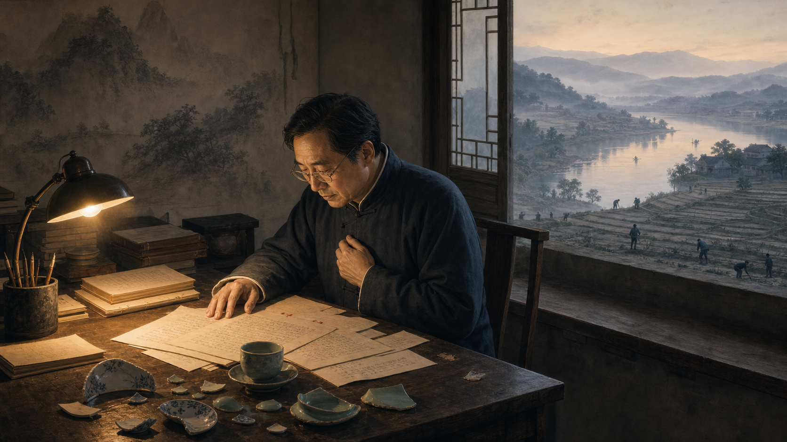
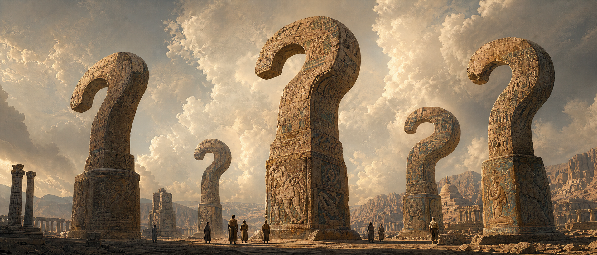
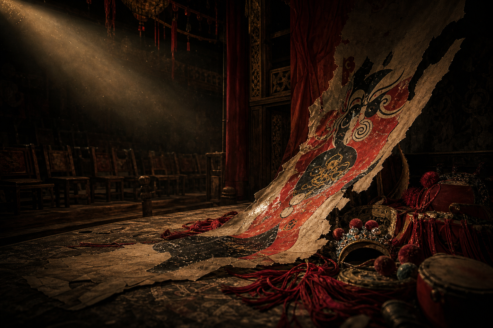
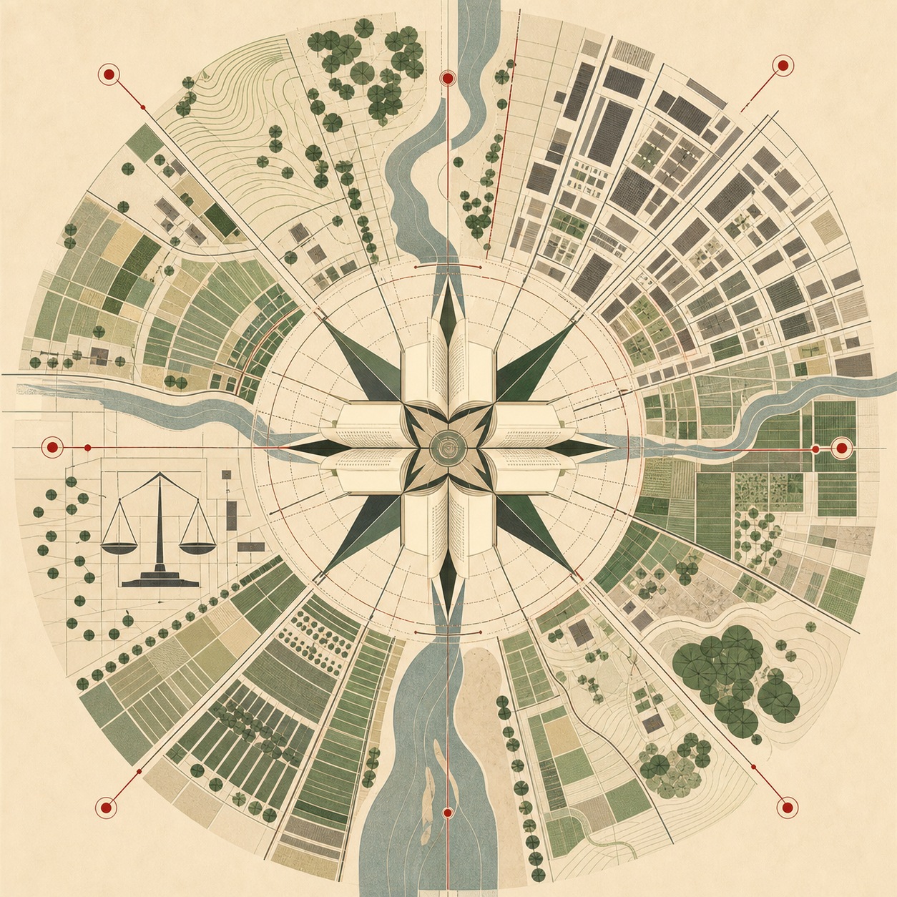
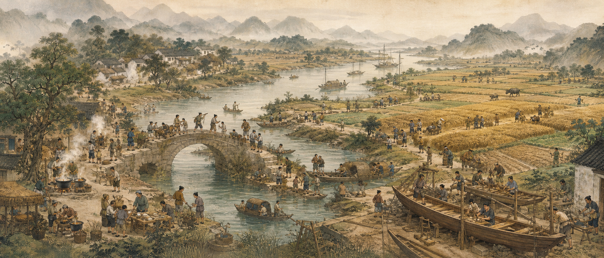
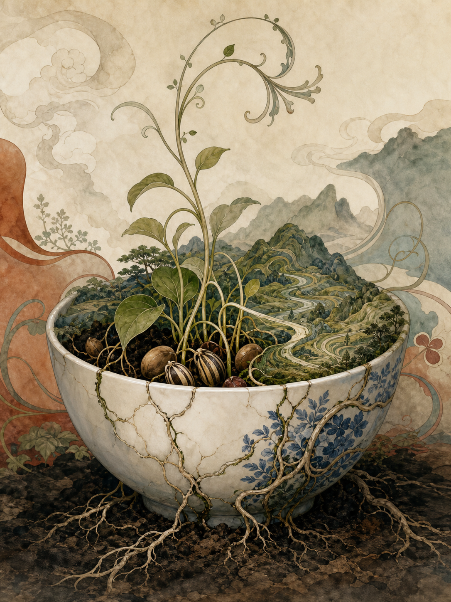

又“惑”一次，反而更踏实
读许倬云《往里走，安顿自己》：从无知、判断、脚注，到为这个世界做点事

阅读导航
序
挺有意思的是，年初我还为自己人到四十而暗自庆幸——觉得像孔子说的"四十不惑"，对很多事情仿佛看开了、放下了，执念也没那么多了。
可又游走了小半年，发现我又"惑"了，陷入了深深的迷惑。这个迷惑往大了说，在于我们大汉族、中华民族的源头脉络究竟是怎么样的？不是像历史课本那样，零散、离散地去记某个时刻发生了什么事，而是试图自己一片一片、一块一块、一个地方一个地方地，把文化的碎片梳理出来。
当然，有很多专门做历史、文学和学问的人已经做过这些工作，但我没看过，正如我什么都不知道一样。说这么多，其实是为了引出今天这本书的作者：许倬云教授。
如果不是许倬云教授去年离世，大家做了一遍又一遍的报道，我还是不了解他。从这个意义上说，我确实孤陋寡闻——不单是许倬云教授，还有很多历史、文学和思想大家，我都不知道。
四十而“惑”——《往里走，安顿自己》
《往里走，安顿自己》这个书名，初看像一碗鸡汤。但许倬云教授一辈子经历过的东西，使得这本书充满了真诚的谆谆教诲，而不是廉价的安慰。他说的"往里走"，不是逃避，不是躲进小楼成一统，而是看清外面的世界之后，回头收拾自己那间屋子。这本书让我感触良多，既有对他的思考，更多的是关于我自己的。
无知并不可怕
当我在这里不断反思自己的无知时，我并不是迷惘的，也并非没有自信。反而是因为我确确实实坐在这里，知道自己懂什么，进而很深刻地知道自己不懂什么。
这当然和二十多年前在学校里那种迷惘、无知又焦虑的状态不一样。那个时候是完全不知道自己能做什么，不知道的太多而知道的太少；现在多知道了一点点，可以在一个相对平和的状态去探寻自己的未知世界。
正如许倬云教授所说，其实很多工作、很多事情是自己主动去做的，是为了这个世界，而不仅仅是为了名声。老话讲："当你为这个世界真正做出一点事情时，这个世界是不会亏待你的。"这句话也对也不对——对，是因为这种"不亏待"终究会来；不对，是因为它常常要等死后多年才被世人重新认识、不再误解，而对已经逝去的人来说，这份迟来的"不亏待"其实没有太大意义。而真正能活着做点事情却又不那么功利的，永远都是极少数。
许倬云教授身体上有残疾，这是不争的事实。但正是因为这份不完整，以及幼年时经历过抗战时期的种种惨象，让他越发平静，越发深邃地去思考和阅读。他不断反思自己，认为不能有狭隘的民族主义，不能为了简单的爱国而爱国，要把中国和世界文化的脉络串联起来，从而用一个更大的视角来研究中国历史。
我不曾想到王小波和李银河也是他的学生——准确地说，是王小波在匹兹堡大学期间，"挂"在许倬云名下接受个别指导。对于王小波和李银河我是知道的，唯独不知道这位如此著名的许倬云教授。
这本书收录的，是许倬云教授晚年口述整理而成的一些散文和想法。翻到里头才发现，他其实是以一位历史学教授的身份，对青年人——或许尤其是对懂中文的青年人——做更多的教导和引导。书里没有用宏大的叙事，或者那些框框架架的理论，而是一点一点地讲，像是一个长者，又怕你看烦了，在那里一点一滴地叮咛和叮嘱。
整部书看完，又发现了老朋友许知远——书中收录了一篇他对许倬云的访谈，梳理了许倬云的生平和想法。让我感觉到有意思的是，他跟查尔斯·泰勒在人文关怀上有相似之处。两个人都在关心同一件事：现代人活得越来越方便，精神上却越来越没着没落。泰勒从西方哲学和宗教史出发，追问上帝退场之后人靠什么安身立命；许倬云则从中国历史和自己的生命经验出发，回应现代人在焦虑、孤立和关系断裂中如何安顿自己。路径不同，问的却是同一个问题。泰勒是在问：现代西方人失去上帝和传统秩序以后，怎样重建意义？许倬云是在问：一个人在历史巨变、身世困厄和时代焦虑中，怎样安顿身心，并仍然关心天下？
往里走，安顿自己

许倬云说，现代世界都陷入了某种精神危机。人无法安身立命，西方、东方都有相似的危机。人一旦失去判断能力，没有目标、没有理念，人生就是一场悲剧。他提到人类历史上的轴心时代，那个年代每个文化圈都冒出一群人，提出大的问题，而不是急着给出答案——那些问题至今仍留在我们脑子里，历代都有人接着想。可如今愿意思考大文化的人越来越少，因为答案太容易得到，吃一口就饱了，不再去想了。物质生活越丰富方便，精神反而越空虚苍白。照这样走下去，人就会变成机器，最后是我们去配合人工智能，而不是人工智能配合我们——我们渐渐没有了自己。
许倬云还说："外在对我们的影响越小，心越安定。"讲起来很简单，但据他说，这件事不是练功，不是调养性格，而是要有远大的人生目标，在小事情上放松自己，宽恕、体谅、怜悯他人。这些不是靠打坐可以得到，也不是靠读经可以得到，更不是靠数呼吸可以得到的，而是在生活、工作中，通过不断观察、学习、回溯、内化，在不断的体会中领悟出来的。短短这一句话，就是所谓的"修"。
大家为了修而修，甚至不为修而修——说白了，刻意去修是一层，不刻意却时时在修，才是更深的一层。
为了解释什么是"往里走"，他说这个"理"不是理性，是情的部分多于理的部分。情与理的融合变成性格的一部分，才是"往里走"。
"往里走"这一说法是许倬云常用的，但他从未给它下过明确定义。"里"这个字，通俗点说，也许叫"心"，也许叫"脑"，但不能用今天生理学上的心和脑去理解，它更像是哲学意义上的说法——是主导一个人性格最内在的总机关，把外来的信息组织起来，存进一个总的数据库里，这个数据库就是一个人的心态，包括感觉、知识、理解，甚至智慧的总和。
他提到在台湾眷村演《四郎探母》的时候，那一句"娘啊"持续了两三分钟。就这一句唱腔，把所有人的情绪都调动出来了。在那个特殊的环境下，海峡两岸的隔阂、对故乡的思念、对自己未来的不安，都在这一句话里入了情，入了理。真理不依赖文字，没有办法叙述，没有办法界定，不可以像记忆面包那样吃了就有。
人一辈子无时无刻不在接收外面的信号，无时无刻不在学知识，只是到了一个地步后，不在生活里边求而已。
不同的人面对同一个材料，感觉可能完全不一样；同一杯酒，哪怕是同一个人，在不同的时候喝起来感觉也不同——佛家有一部经典专门讲这个道理。感觉本身会因时、因地、因心情而变化，所以感觉靠不住，我们接收到的信号也同样靠不住。

热闹纸上，哀伤深处
许倬云教授举了《水浒传》《三国演义》和《西游记》的例子。在他的叙事里，我更理解了《水浒传》并不是表面的打打杀杀，而是一种悲凉的深意。《水浒传》的立意是反水浒的。战争片的立意是反战争的。 许倬云总结的中国传统名著——包括《封神榜》这些——希望传达的是热热闹闹的纸上云烟。
到后来都是哀伤，哀伤之后要一个很大的原谅，要有一份慈悲。光看热闹、光看剧情，而不看最后的哀伤和慈悲，我们就没有读懂传统的文化。这其实就是我疑惑的来源——我们习惯了看热闹，却忘了热闹散场之后，作者真正想说的话。
读不懂哀伤和慈悲的，又岂止是读书？在现实生活里，同样有人只看得见表面的热闹。就成功与名誉来讲，有些人可以堆砌、塑造一个形象，肚子里只有一点墨水，却假装念过很多书。这类人沽名钓誉，去找广告公司帮他们塑造形象，这种事天下多得很。真正的成功、失败，和表面的成功、失败常常是颠倒过来的——通过他人塑造所得来的名誉和光辉，都是假的。

读书是为了获得判断世界的能力
许倬云说，读书不是为了学位，而是为了获得一种判断世界的能力。判断的第一步是看见环境、懂得环境；第二步是分清哪些常识只是暂时的，哪些错误是人难以避免的——对于可以避免的错误，至少自己不要犯。保持一定程度的知识训练，才能获得安定和冷静。
在艰难困苦之中找个安静的所在，是自己的修养，也是中国古人的智慧。
怎么定义国家、怎么定义理想，都是自己的事情。出不了国，就尽量在国家已定的法律之内做事、帮助国家；如果法律不合理，就想办法推动改变。有自由发言权的地方，可以自由发言；没有自由发言权的地方，也可以通过各种机会和场合慢慢去了解、去推动那些不够合理的事情得到改进。一个人能尽自己的力，做好该做的事，就已经是很了不起的事，也是对国家、对民族的贡献。
人受教育的功能，不仅是用受的教育换得吃饭的工具，也不仅是受了教育要知道人跟人和平相处，更要养成一种远见，能超越你未见。我们要想办法设想我们没见到的世界还有可能是什么样，扩展这种可能性。
正如我们在大学学的是基础课，等我们读研究生的时候，遇到的就不是书本上的问题了，需要自己去想办法解决工作里遇到的问题。或许有的是照搬学科、日复一日；但有的却是从未见过，必须开创一幅天地。从某个程度说，开疆拓土和读博士并没有太大的区别，只是一个更偏向学术，一个更偏向做事。
就拿我自己来说，学的东西如果多年不去丰满、不去更新、不去做，哪怕是 Web 技术，现在都更新了五六遍了，AI 技术也迭代了四五次。如果不主动学习，没有好奇心，根本没有属于自己的意见和观点，是没有办法驾驭这些技术的。我的自信，正好来自于持续的研究和学习，让我觉得有底气去把握技术的走向。而人文的关怀、哲学的思辨、对科学技术的了解，这些东西会慢慢融合在一起，不断扩大我的边界，提升我的思考能力。
在中国传统文化里，尽心尽力做好一件事，这是"忠道"；做事的时候自己能够时时反省，对他人能够体谅、包容，能够做到将心比心、利人利己，这叫"恕道"。
要说把忠恕之道活出来的人，苏东坡大概是最好的例子。他一辈子很不幸，一辈子被压迫、被打压。但是所在之地，没有他不做的事情。被贬到哪儿，他就静下来做点事。一个人不被环境打倒，反而在逆境中扎根，这本身就是最大的修行。
甘心做一个脚注
许倬云说，做研究、做学术、写文章，不外乎是在角落里找一个没人碰过的题目，破出一块属于自己的土来，不必去求大名声。他常提起自己的老师刘崇鋐先生说过的话：如果自己不能在历史长河里成为一个有大贡献的人，至少能让自己的一篇文章被某部重要著作引用，也就尽了一片心。
你一辈子努力，最后能够在某几个角落里作为脚注，支援别人的研究，使他的立论得到一个很好的立足点，那么你的功劳就很大。不一定要做领头羊，要甘心做"脚注"。 你能够做到一辈子有一篇文章被人家引用作为脚注，许倬云认为就是很大的成就了。不管如何，他说人一辈子就是要为这个世界做点事情——不一定要有名声，但一定要有一块土。
说到"一块土"，我又想起另一个类似的说法。张五常在芝加哥大学做研究的时候，弗里德曼曾对他说过："You have a position."——意思是在经济学领域，他已经有一席之地了。张五常对此非常开心，因为他认为做工作就是要做到在这一领域占有一席之地。回想十几年前，我在读研究生，做混沌和密码学的过程中，我何尝不也是这么想：不求有多大的贡献，但希望自己做的这点东西不是白费功夫，也不是为做而做的。
虽然我在研究生阶段并没有做出多大的学术成就，也没有学会这个领域更深层次的方法，只学到了一些论文的基本方式、形式、想法、观点和出发点，这显然是远远不够的。正如许先生说的那种"顿悟"——我突然破解了那个系统，理解了整个混沌理论和密码学紧密的耦合之后，突然产生的那种欣喜——无人可说，只有自己可慰藉。我其实就是太希望分享了，太向外求了，反而什么都没求到。
但我想，有些事情虽然以前没做完，隔了十来二十年继续去做，也是能做成的。至少现在，我之所以看书、读书、思考，就是希望自己多少还能做一点东西，至于具体能做什么，我还没有太明确的想法。虽然有些事情做不起来，但还是要抱有远大的理想，并进行谨慎的求证——就像胡适说的："大胆假设，小心求证。"
我当年做的密码分析工作其实可以被泛化到同类密码系统分析的工作中去，想到这一点我是很开心的。但我当时没有这么去做，那是因为我还不懂其实应该要这么去做。所以，在研究生阶段，一个好的导师能给你一个好的方法和切入点，真的是受益终身。
当自己摸索出来之后，虽然年纪渐长，学识也不高，但我确确实实还是做了一些工作，直到现在我也依然这么认为。所以我很认同耿同学提到的"打假"——如果大家都不认真做学术了，反而是对那些认真做学术的人最大的不公。

老百姓的历史
还有一点让我深深认同的，是许教授写《万古江河》的出发点。
他说《万古江河》里没有帝王将相，没有开拓疆土，只有社会文化与经济发展。这才是一个普通人的历史。 这份力量深深地埋在中国文化的底层，使中国文化能够在穷途末路时开天换地。
因为改朝换代的真正力量不是士大夫，而是最底层的民间。但起义的人常常不是建国的人——他有能力、有勇气，却没有建设文化的能力。很多历史学同行写的是台面上的人物、帝王将相或什么人的成功，写的是名人的事情、堂堂的大道理，老百姓的死活没人管。所以，许倬云认为自己就是要将老百姓吃饭过日子的事情，写人与自然如何整合在一起的事情，放在中国文化的精神里头。
许教授也提出了一个大问题，而这也是我现在的疑惑。
他说，佛教传入中国，中国用了上千年来消化；基督教传进来，我们还没有消化成功。外来事物如果是直接进来的，必须经历消化的过程——先咀嚼、吞食，再消化，不能直接吞下去，要通过咀嚼来检验合不合适。
回顾我们早期外来的经验：早期输入的佛教修改了多少？中期输入的转世观念又修改了多少？而"解脱"那一理想究竟是在未来、在过去、在死后，还是在当下？

我也一直在思考一个事情：传统的中国文化、汉文化，从汉代、五代到唐宋，再到明清，到底是怎么变迁的？我并不是想说谁对谁错，我是想理清这个脉络，然后去给出我自己的选择。
回顾了这么多个朝代，许教授认为他最看重的就是汉朝——汉朝将国家的基础放在农村独立的农家，这样才能出人才，才能出财富，这是交通线的末梢；城市都是交通线上打的结，商人、官员都在转接点上。
结语
该做的就做，该说的就说，别人怎么想、怎么批评都不在乎，尽力而为，求一个良心之所安。这样做不是为了对上天负责，也不是为了对社会负责，只是对自己负责——做一个脚注也好，破一块土也罢，不必追求顶天立地，更不必追求被人封为精英。
再回看王国维、陈寅恪这些名垂千古的先生，才发现我现在困惑的那些问题，其实先哲们也曾困惑过，也留下过他们各自的思索与选择。年初以为自己"不惑"了，读完许倬云，又"惑"了——但这一回的惑，比从前踏实。
这一回的“惑”，不是散乱，而是重新获得问题意识后的踏实。
十幅插图把文章分成从迷惑、内省、判断、脚注到普通人历史的路径；排版上保持长文阅读节奏，不把思想文章做成图册。